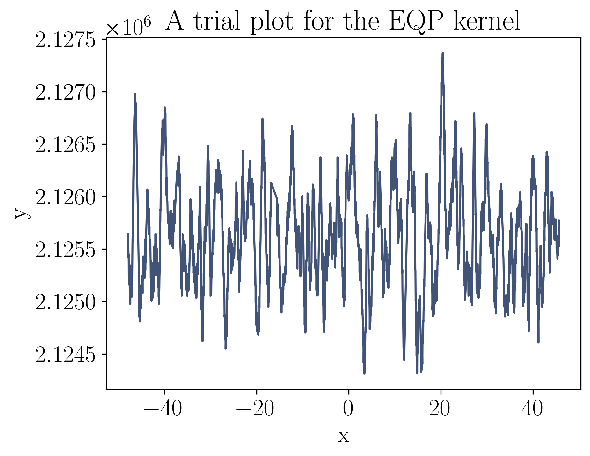

using NBInclude
@nbinclude("KIC1430163.ipynb")
Size of the subset: 3518
Mean of the flux: 2.125678e6
Log of this mean: 14.569601
Variance of the subset: 209401.3
Log of this variance: 12.2520075
Mean of the time differences: 0.026616617260856176
Log of this mean: -3.626219549189213
1 / Log of this mean: -0.2757692926297279
The peak is at 0.2222990081813975.
The relevant estimate of the period is 4.498445621421726.
function unpack(θ)
A = θ[1]
l = θ[2]
P = θ[3]
μ = θ[4]
σ² = θ[5]
return A, l, P, μ, σ²
end
function nlml(θ)
A, l, P, μ, σ² = unpack(θ)
k = A * stretch(EQ(), 1 / l^2) * Stheno.Cosine(P / 2)
g = GP(μ, k, GPC())
return -logpdf(g(t, σ²), f)
end
;Aₜ = σ²₀
lₜ = 0.60
Pₜ = P₀
μₜ = μ₀
σ²ₜ = 5500
EQP = Aₜ * stretch(Stheno.EQ(), 1 / lₜ^2) * Stheno.Cosine(Pₜ / 2)
g = GP(μₜ, EQP, GPC())
x = t
y = rand(g(x, σ²ₜ))
plot(x, y; color)
title(L"\textrm{A trial plot for the EQP kernel}")
xlabel(L"\textrm{x}")
ylabel(L"\textrm{y}")
savefig("figures/EQ.pdf", bbox_inches = "tight")
θ = [Aₜ, lₜ, Pₜ, μₜ, σ²ₜ]
println("Negative log marginal likelihood: ", nlml(θ))
Negative log marginal likelihood: 21253.239040160737
θ₀ = [σ²₀, 0.55, 3.88, μ₀, 6000]
θₗ = [209000.0, 0.45, 3.0, 2125650.0, 5950.0]
θᵤ = [210000.0, 0.7, 4.5, 2125750.0, 6050.0]
results = Optim.optimize(
nlml,
θ->Zygote.gradient(nlml, θ)[1],
θₗ,
θᵤ,
θ₀,
Fminbox(LBFGS()),
Optim.Options(
iterations = 10,
show_trace = true,
extended_trace = true,
store_trace = false,
);
inplace = false,
)
Fminbox
-------
Initial mu = 0.0205539
Fminbox iteration 1
-------------------
Calling inner optimizer with mu = 0.0205539
(numbers below include barrier contribution)
Iter Function value Gradient norm
0 2.119242e+04 3.998282e+02
* Current step size: 1.0
* time: 0.0005290508270263672
* g(x): [0.00013976047838235305, 399.8282216657727, -1.0873415027399378, 0.003565983494533929, -0.0024801570797695696]
* x: [209401.328125, 0.55, 3.88, 2.125678e6, 6000.0]
1 2.118634e+04 1.294103e+01
* Current step size: 0.00028793417946751355
* time: 181.7891490459442
* g(x): [0.0002221468440328038, 12.941032637195681, -4.474617097632583, 0.0037150532062529013, 0.007061735604336403]
* x: [209401.32812495975, 0.5209934034787261, 3.8802898882940404, 2.125677999998973e6, 6000.000000714111]
2 2.118435e+04 1.696731e+01
* Current step size: 0.14377606324365522
* time: 547.1100471019745
* g(x): [0.00022335871275657492, -16.967310814596907, -0.2334140716194102, 0.0036698106282941137, 0.007556348088945188]
* x: [209401.32809261352, 0.5155051427292547, 4.491155767361329, 2.125677999463899e6, 5999.998939535215]
3 2.118435e+04 1.474876e+01
* Current step size: 0.12038170332644237
* time: 729.8048729896545
* g(x): [0.0002228968624491474, -14.748761041681158, 0.6324314193844289, 0.0036673822952695808, 0.007506521886562407]
* x: [209401.32806604615, 0.5156418173993742, 4.493523926255944, 2.1256779990209755e6, 5999.998076687209]
4 2.118434e+04 1.174398e+00
* Current step size: 0.1372772944167524
* time: 851.57297706604
* g(x): [0.00021970183539720163, 1.1743982818894092, -0.22578949235383172, 0.003651788550426643, 0.007152817190178287]
* x: [209401.32787365207, 0.5167163611597925, 4.490853687645611, 2.125677995814512e6, 5999.991825371607]
5 2.118434e+04 3.975674e-01
* Current step size: 1.392725764202965
* time: 1034.5845539569855
* g(x): [0.00022001403607662672, -0.39756740962707704, 0.016059808026248845, 0.003649461424028105, 0.007187177938529965]
* x: [209401.32758522255, 0.5166068188837685, 4.491759906531879, 2.1256779910251936e6, 5999.982408264144]
6 2.118434e+04 4.840306e-01
* Current step size: 7.764120722654376
* time: 1278.3682699203491
* g(x): [0.00021983152985779176, 0.48403057837081553, 0.4546444558890701, 0.0036190382385771084, 0.007163470395188375]
* x: [209401.32518467287, 0.5166581796670238, 4.492975133910911, 2.1256779511866565e6, 5999.904059529862]
7 2.118433e+04 8.304972e+00
* Current step size: 11.818222776791607
* time: 1521.7932069301605
* g(x): [0.00021829168293461805, 8.30497195110212, 1.9930446959408266, 0.003084480066102906, 0.0069207085105766255]
* x: [209401.2823032071, 0.5171379552497307, 4.4953509509269445, 2.1256772399872243e6, 5998.504542953791]
8 2.118429e+04 3.663705e+01
* Current step size: 4.521568792003812
* time: 1704.642795085907
* g(x): [0.00021296557207855748, 36.637054577009664, 0.3786341925966239, -0.0014590191149870288, 0.005686795746222522]
* x: [209400.91693324354, 0.5187838236608519, 4.492311431148441, 2.1256711834711535e6, 5986.580365732769]
9 2.118419e+04 9.404035e+00
* Current step size: 2.5180518411024053
* time: 1887.0345358848572
* g(x): [0.0002188089444801438, 9.404035192954488, 3.3013766626746026, -0.009678016097325404, 0.0048766970796899735]
* x: [209400.30077864102, 0.51649648798582, 4.496403427332518, 2.1256609816014725e6, 5966.473064662498]
10 2.118418e+04 9.239407e-02
* Current step size: 0.9558780694878023
* time: 2008.5646300315857
* g(x): [0.00022072715984079128, 0.09239407363067637, -0.08873356322114034, -0.010149969727027048, 0.004968076858554742]
* x: [209400.2693498992, 0.5158772919725187, 4.491365332694086, 2.125660475021127e6, 5965.449599526506]
Exiting inner optimizer with x = [209400.2693498992, 0.5158772919725187, 4.491365332694086, 2.125660475021127e6, 5965.449599526506]
Current distance to box: 0.00863467
Decreasing barrier term μ.
Fminbox iteration 2
-------------------
Calling inner optimizer with mu = 2.05539e-5
(numbers below include barrier contribution)
Iter Function value Gradient norm
0 2.118454e+04 2.452979e+00
* Current step size: 1.0
* time: 0.0005738735198974609
* g(x): [0.00023778837371744125, 0.2925650390476707, -2.4529785633686707, -0.008419108021723016, 0.006054277482571452]
* x: [209400.2693498992, 0.5158772919725187, 4.491365332694086, 2.125660475021127e6, 5965.449599526506]
1 2.118453e+04 1.647981e+01
* Current step size: 0.003953373714989099
* time: 243.16345405578613
* g(x): [0.0002411183806960016, -16.479811601242922, -2.495260795979947, -0.008449556780939635, 0.006428823725979967]
* x: [209400.26934895915, 0.5147268193350644, 4.498967145749724, 2.125660475054411e6, 5965.449575591687]
2 2.118453e+04 1.644802e+01
* Current step size: 9.279448684248467e-6
* time: 727.8566100597382
* g(x): [0.00024110552742509915, -16.44802284627418, -0.28721735859550046, -0.00844938568978735, 0.006427853788534065]
* x: [209400.26934883048, 0.5147242387639926, 4.4999907637822885, 2.1256604750589663e6, 5965.449572312697]
3 2.118453e+04 4.480041e+01
* Current step size: 0.08982502857518294
* time: 1091.252965927124
* g(x): [0.00024080347652759746, -14.945908047898694, 44.80040712256991, -0.008446055398724403, 0.006394209008626264]
* x: [209400.26932746408, 0.5148238362470702, 4.499999565512347, 2.1256604758153367e6, 5965.44902786117]
4 2.118452e+04 2.626775e+00
* Current step size: 0.0022516103647389645
* time: 1212.7623488903046
* g(x): [0.00023726460411045727, 2.6267748702380844, -1.9013633359414497, -0.008406905654243266, 0.005999523139497072]
* x: [209400.26907681057, 0.5159922806106431, 4.499960687970223, 2.125660484688449e6, 5965.442640777761]
5 2.118452e+04 1.829737e+00
* Current step size: 1.3400637950900915
* time: 1394.6988530158997
* g(x): [0.00023791995737518253, -0.6190571111611941, -1.8297366709347525, -0.008406057013110483, 0.0060723170323975]
* x: [209400.2688026487, 0.5157759025042216, 4.499966285971813, 2.1256604943868583e6, 5965.435655845103]
6 2.118451e+04 9.573104e+01
* Current step size: 54.790136823841955
* time: 1879.5550019741058
* g(x): [0.0002379711913715353, -0.6623845068200904, 95.73104398506247, -0.00798777912679088, 0.0060597540871893795]
* x: [209400.25225176496, 0.5157623077295916, 4.499999790630309, 2.1256610794844087e6, 5965.013979473896]
7 2.118451e+04 5.709003e+02
* Current step size: 0.005120398597443235
* time: 2122.3198029994965
* g(x): [0.0002379662478332599, -0.6347791780768328, 570.9002849483894, -0.007981523064618183, 0.0060589322560084995]
* x: [209400.25200608297, 0.5157639884221809, 4.4999999641505495, 2.125661088165024e6, 5965.0077202531065]
8 2.118448e+04 1.042601e+02
* Current step size: 0.9574995681187539
* time: 2243.5440418720245
* g(x): [0.00023295078543114717, 25.837350549776797, 104.26012775378308, -0.004054433502374408, 0.005333482783671825]
* x: [209400.09761113345, 0.5174346859484807, 4.499999807136552, 2.125666543973154e6, 5961.0741911934865]
9 2.118441e+04 1.307777e+02
* Current step size: 3.562217656075008
* time: 2486.29900097847
* g(x): [0.00023851300164283424, -0.06801093016670662, 130.77768846591815, 0.0040653502072982945, 0.005642324007521084]
* x: [209399.7751677656, 0.5155202331966965, 4.499999845704406, 2.1256779227514486e6, 5952.859833699164]
10 2.118441e+04 6.816409e+00
* Current step size: 121.39661509779721
* time: 2789.055098056793
* g(x): [0.00023716858116047722, 6.81640948732196, 1.057409962531879, 0.005396075648282773, 0.0053706542366874065]
* x: [209399.67931033406, 0.5159260855566354, 4.499994056718684, 2.125679791009689e6, 5950.470619449984]
Exiting inner optimizer with x = [209399.67931033406, 0.5159260855566354, 4.499994056718684, 2.125679791009689e6, 5950.470619449984]
Current distance to box: 5.94328e-6
Decreasing barrier term μ.
Fminbox iteration 3
-------------------
Calling inner optimizer with mu = 2.05539e-8
(numbers below include barrier contribution)
Iter Function value Gradient norm
0 2.118441e+04 6.816609e+00
* Current step size: 1.0
* time: 0.0005521774291992188
* g(x): [0.00023718575175719813, 6.8166093980356965, -2.3974611792663656, 0.005396472434449892, 0.005414078412176084]
* x: [209399.67931033406, 0.5159260855566354, 4.499994056718684, 2.125679791009689e6, 5950.470619449984]
1 2.118441e+04 2.428804e+00
* Current step size: 6.567033440971167e-5
* time: 120.99755501747131
* g(x): [0.00023854293169640886, 0.08611659916416982, -2.428804283541794, 0.005404139919573448, 0.005566107379011016]
* x: [209399.6793103185, 0.5154784389264452, 4.4999943268241065, 2.125679791009335e6, 5950.47061909444]
2 2.118441e+04 1.403862e+00
* Current step size: 0.0014881488395308954
* time: 604.5360660552979
* g(x): [0.00023854292329614644, 0.08598646534291994, -1.4038621255969423, 0.005404133758574385, 0.005566108708528006]
* x: [209399.6793099634, 0.5154784037342688, 4.499999980016669, 2.1256797910012905e6, 5950.470610806529]
3 2.118441e+04 2.894151e+00
* Current step size: 0.002058582274795364
* time: 846.401153087616
* g(x): [0.00023854295958647566, 0.08580923703532628, 2.8941511042049495, 0.0054041259838314894, 0.005566112328891595]
* x: [209399.67930947128, 0.5154783916140768, 4.499999996141247, 2.1256797909901426e6, 5950.470599320604]
4 2.118441e+04 8.125997e+03
* Current step size: 0.23074722054267752
* time: 1330.2530341148376
* g(x): [0.00023856932994558967, -0.04245732638011357, 8125.997360769578, 0.005398505688086945, 0.00556873529493468]
* x: [209399.67895364852, 0.5154696705857781, 4.499999999997471, 2.1256797829295057e6, 5950.462294337307]
5 2.118440e+04 7.190285e+00
* Current step size: 0.0026164552084427463
* time: 2058.621378183365
* g(x): [0.0002400374681967806, -7.19028527338446, 0.16513183944692011, 0.005085199960192094, 0.0038111878736996523]
* x: [209399.65914734697, 0.5149841290041237, 4.49999999218823, 2.1256793342470373e6, 5950.000010797034]
6 2.118440e+04 7.190267e+00
* Current step size: 1.8453614095836568e-5
* time: 2240.716560125351
* g(x): [0.0002400374650881369, -7.190267042652023, 0.16513940445880904, 0.005085193954486144, -0.0032740595523747286]
* x: [209399.65914697797, 0.5149841299993265, 4.499999992188252, 2.1256793342386847e6, 5950.000002286585]
7 2.118440e+04 3.820645e+00
* Current step size: 1.0073996790310435
* time: 2422.3640360832214
* g(x): [0.00023856984418489132, 0.09829479354457875, 3.8206451091264553, 0.005070595662595245, -0.041995223419079464]
* x: [209399.65871812872, 0.5154680797857637, 4.499999996712872, 2.125679324858564e6, 5950.000000432297]
8 2.118438e+04 4.632534e+00
* Current step size: 1324.1235509636465
* time: 2846.6010670661926
* g(x): [0.0002377347454384577, 4.63253378503107, 1.1084662487915913, 0.0002363674266749896, 0.005451504886823809]
* x: [209399.34087588554, 0.5157671939900995, 4.499999994159322, 2.1256725731746634e6, 5950.058853492352]
9 2.118438e+04 1.324557e-01
* Current step size: 1.0434276354442025
* time: 3028.1313841342926
* g(x): [0.00023867051536795948, -0.010725005408486223, -0.13245565991682406, 5.051647134931057e-5, 0.0055564963280588485]
* x: [209399.32840721175, 0.5154584531336883, 4.49999999106302, 2.1256723135015694e6, 5950.061129593341]
10 2.118438e+04 1.352707e-01
* Current step size: 1.5310086854169895
* time: 3209.6829771995544
* g(x): [0.0002386673839069212, 0.004492603121179457, -0.13527065126994442, 3.161749541897711e-5, 0.00555616314953852]
* x: [209399.3268021077, 0.5154594697713143, 4.49999999105179, 2.1256722871064264e6, 5950.061347921621]
Exiting inner optimizer with x = [209399.3268021077, 0.5154594697713143, 4.49999999105179, 2.1256722871064264e6, 5950.061347921621]
Current distance to box: 8.94821e-9
Decreasing barrier term μ.
Fminbox iteration 4
-------------------
Calling inner optimizer with mu = 2.05539e-11
(numbers below include barrier contribution)
Iter Function value Gradient norm
0 2.118438e+04 2.429959e+00
* Current step size: 1.0
* time: 0.0005581378936767578
* g(x): [0.00023866740114294194, 0.004492805534135949, -2.4299588564408405, 3.1618152509139e-5, 0.005556497647389527]
* x: [209399.3268021077, 0.5154594697713143, 4.49999999105179, 2.1256722871064264e6, 5950.061347921621]
1 2.118438e+04 2.429236e+00
* Current step size: 0.00024405161570153252
* time: 181.2830581665039
* g(x): [0.00023867072595961864, -0.012003191612968225, -2.4292362945797787, 3.161775484105651e-5, 0.005556869963291745]
* x: [209399.32680204947, 0.5154583732948705, 4.499999993362029, 2.1256722871064185e6, 5950.061346565549]
2 2.118438e+04 8.243013e-01
* Current step size: 0.0002174511070281449
* time: 605.0441620349884
* g(x): [0.00023867072511940654, -0.011998283923187449, 0.8243013397403645, 3.161773691679461e-5, 0.005556869704954443]
* x: [209399.32680185893, 0.5154583734851791, 4.499999999993689, 2.1256722871063934e6, 5950.061342129236]
3 2.118438e+04 3.854508e+03
* Current step size: 0.0010669640468801852
* time: 907.3717470169067
* g(x): [0.0002386707225634848, -0.011984516961316213, 3854.5078785742953, 3.16177128593476e-5, 0.005556869190466966]
* x: [209399.32680159647, 0.5154583742663521, 4.499999999999995, 2.1256722871063584e6, 5950.061336019033]
4 2.118438e+04 7.689564e+02
* Current step size: 0.00576025636221356
* time: 1875.165120124817
* g(x): [0.00023864496946409352, 0.12693016317669487, 768.9563715385075, 3.137537789582439e-5, 0.001789552495469902]
* x: [209399.32416707798, 0.5154662226182626, 4.499999999999973, 2.125672286757346e6, 5950.000000005463]
5 2.118438e+04 7.689564e+02
* Current step size: 4.207043357826866e-8
* time: 1996.2182130813599
* g(x): [0.00023864496942833504, 0.12693019881373924, 768.9563715383943, 3.137537748273122e-5, 0.0006895595379032993]
* x: [209399.32416707792, 0.5154662226178827, 4.499999999999973, 2.125672286757346e6, 5950.000000004227]
6 2.118438e+04 1.273261e+01
* Current step size: 1.0381773298523955
* time: 2178.003968000412
* g(x): [0.00023867194513671193, -0.006907662891491422, 12.732608098533818, 3.134836678519866e-5, -0.00112946600649802]
* x: [209399.32391403633, 0.5154573265834211, 4.499999999998645, 2.125672286724083e6, 5950.000000003075]
7 2.118438e+04 2.426602e+00
* Current step size: 77737.8655364742
* time: 2722.6697239875793
* g(x): [0.0002385212163951314, 0.549657810906386, -2.4266018588692684, -0.0018084945614737246, 0.005542667274670229]
* x: [209379.7615003888, 0.5154909593011219, 4.499999993061754, 2.125669717169672e6, 5950.000094307712]
8 2.118438e+04 2.429607e+00
* Current step size: 1.172328764603593
* time: 2904.1144251823425
* g(x): [0.00023865017979874057, -0.09147906318324223, -2.429606997242452, -0.0018179960038777665, 0.005557146480285717]
* x: [209379.64697703483, 0.5154483225450264, 4.4999999930212375, 2.1256697042837506e6, 5950.0000948495635]
9 2.118429e+04 2.437470e+00
* Current step size: 25206.715135802264
* time: 4296.1001970767975
* g(x): [4.8077096824251274e-5, -1.6725749408938986, -2.4374699152536423, 0.001414279426098165, 0.00560677033090281]
* x: [209000.0000001079, 0.5152664150906964, 4.499999861004216, 2.1256742144992207e6, 5950.001707474268]
10 2.118429e+04 2.437470e+00
* Current step size: 5.927404147129426e-11
* time: 4417.363552093506
* g(x): [3.7670768250289404e-5, -1.6725747891003822, -2.437469915308116, 0.0014142794255250497, 0.0056067703295328035]
* x: [209000.0000001023, 0.5152664150907015, 4.499999861004216, 2.1256742144992207e6, 5950.001707474268]
Exiting inner optimizer with x = [209000.0000001079, 0.5152664150906964, 4.499999861004216, 2.1256742144992207e6, 5950.001707474268]
Current distance to box: 1.07888e-7
Decreasing barrier term μ.
Fminbox iteration 5
-------------------
Calling inner optimizer with mu = 2.05539e-14
(numbers below include barrier contribution)
Iter Function value Gradient norm
0 2.118429e+04 2.437618e+00
* Current step size: 1.0
* time: 0.0005459785461425781
* g(x): [0.00023839827793754105, -1.6725749406904415, -2.437617641681046, 0.0014142794266752022, 0.005606782356268134]
* x: [209000.0000001079, 0.5152664150906964, 4.499999861004216, 2.1256742144992207e6, 5950.001707474268]
1 2.118429e+04 1.669602e+00
* Current step size: 1.1768460931464275e-7
* time: 787.5763239860535
* g(x): [0.00023839767732324892, -1.66960177251779, -0.33381807600549473, 0.0014142785853201991, 0.005606715257386994]
* x: [209000.0000001079, 0.5152666119270248, 4.49999999999999, 2.1256742144992207e6, 5950.001707473609]
2 2.118429e+04 2.429818e+00
* Current step size: 6.687234863367258e-5
* time: 913.407548904419
* g(x): [0.00023804929837478552, 0.0037564517091772023, -2.4298178358212117, 0.0014138107032393927, 0.005568959696266933]
* x: [209000.00000010213, 0.5153777851511084, 4.499999842897744, 2.125674214499126e6, 5950.001707099426]
3 2.118429e+04 2.429818e+00
* Current step size: 0.0012742687453215981
* time: 2720.744057893753
* g(x): [-0.00046797628398807377, 0.0037512987159408406, -2.429817857978401, 0.0014138094129348688, 0.005568959577584119]
* x: [209000.00000000003, 0.5153777846398717, 4.499999843102461, 2.1256742144973245e6, 5950.001700002883]
4 2.118429e+04 2.429818e+00
* Current step size: 2.4167292438314263e-7
* time: 4432.588050842285
* g(x): [-0.00046797628396082403, 0.0037511644575684367, -2.4298178578264764, 0.0014138094127444656, 0.005568959575535461]
* x: [209000.00000000003, 0.5153777846397504, 4.499999843102529, 2.125674214497324e6, 5950.0017000005255]
Exiting inner optimizer with x = [209000.00000000003, 0.5153777846398717, 4.499999843102461, 2.1256742144973245e6, 5950.001700002883]
Current distance to box: 2.91038e-11
Decreasing barrier term μ.
Fminbox iteration 6
-------------------
Calling inner optimizer with mu = 2.05539e-17
(numbers below include barrier contribution)
Iter Function value Gradient norm
0 2.118429e+04 2.429818e+00
* Current step size: 1.0
* time: 0.0005469322204589844
* g(x): [0.00023754433447498817, 0.003751298716143695, -2.4298179888494804, 0.0014138094129354458, 0.0055689595896623355]
* x: [209000.00000000003, 0.5153777846398717, 4.499999843102461, 2.1256742144973245e6, 5950.001700002883]
1 2.118429e+04 2.406676e+00
* Current step size: 6.462563935910516e-8
* time: 1769.4853818416595
* g(x): [0.0002375443319885251, 0.003758461809171134, -2.406675946448814, 0.0014138094047590844, 0.005568959388349206]
* x: [209000.00000000003, 0.5153777843974416, 4.499999999999999, 2.1256742144973245e6, 5950.001700002523]
2 2.118429e+04 2.406676e+00
* Current step size: 2.5074618965253624e-11
* time: 3355.6286039352417
* g(x): [0.00023754433199117477, 0.0037585377261128796, -2.406675946843737, 0.0014138094044477665, 0.0055689593886286675]
* x: [209000.00000000003, 0.5153777843973287, 4.499999999999999, 2.1256742144973245e6, 5950.001700002523]
3 2.118429e+04 2.406676e+00
* Current step size: 5.963682252894489e-12
* time: 5246.623396873474
* g(x): [0.00023754433199117477, 0.0037585377261128796, -2.406675946843737, 0.0014138094044477665, 0.0055689593886286675]
* x: [209000.00000000003, 0.5153777843973287, 4.499999999999999, 2.1256742144973245e6, 5950.001700002523]
Exiting inner optimizer with x = [209000.00000000003, 0.5153777843973287, 4.499999999999999, 2.1256742144973245e6, 5950.001700002523]
Current distance to box: 8.88178e-16
Decreasing barrier term μ.
Fminbox iteration 7
-------------------
Calling inner optimizer with mu = 2.05539e-20
(numbers below include barrier contribution)
Iter Function value Gradient norm
0 2.118429e+04 2.429794e+00
* Current step size: 1.0
* time: 0.0005419254302978516
* g(x): [0.00023824985260963784, 0.0037585377261130826, -2.4297944464695354, 0.0014138094044477672, 0.0055689593886407455]
* x: [209000.00000000003, 0.5153777843973287, 4.499999999999999, 2.1256742144973245e6, 5950.001700002523]
InterruptException:
Stacktrace:
[1] reshape at ./reshapedarray.jl:51 [inlined]
[2] reshape at ./reshapedarray.jl:111 [inlined]
[3] reshape at ./reshapedarray.jl:141 [inlined]
[4] _maybe_reshape_parent at ./subarray.jl:120 [inlined]
[5] view at ./subarray.jl:159 [inlined]
[6] maybeview at ./views.jl:133 [inlined]
[7] dotview at ./broadcast.jl:1160 [inlined]
[8] (::Zygote.var"#829#830"{LinearAlgebra.Symmetric{Float64,Array{Float64,2}},LinearAlgebra.Cholesky{Float64,Array{Float64,2}}})(::NamedTuple{(:uplo, :info, :factors),Tuple{Nothing,Nothing,Array{Float64,2}}}) at /home/paveloom/.julia/packages/Zygote/seGHk/src/lib/array.jl:534
[9] (::Zygote.var"#3242#back#831"{Zygote.var"#829#830"{LinearAlgebra.Symmetric{Float64,Array{Float64,2}},LinearAlgebra.Cholesky{Float64,Array{Float64,2}}}})(::NamedTuple{(:uplo, :info, :factors),Tuple{Nothing,Nothing,Array{Float64,2}}}) at /home/paveloom/.julia/packages/ZygoteRules/6nssF/src/adjoint.jl:49
[10] logpdf at /home/paveloom/.julia/packages/Stheno/II2B3/src/abstract_gp.jl:198 [inlined]
[11] (::typeof(∂(logpdf)))(::Array{Float64,1}) at /home/paveloom/.julia/packages/Zygote/seGHk/src/compiler/interface2.jl:0
[12] logpdf at /home/paveloom/.julia/packages/Stheno/II2B3/src/abstract_gp.jl:195 [inlined]
[13] (::typeof(∂(logpdf)))(::Float64) at /home/paveloom/.julia/packages/Zygote/seGHk/src/compiler/interface2.jl:0
[14] nlml at ./In[16]:14 [inlined]
[15] (::typeof(∂(nlml)))(::Float64) at /home/paveloom/.julia/packages/Zygote/seGHk/src/compiler/interface2.jl:0
[16] (::Zygote.var"#41#42"{typeof(∂(nlml))})(::Float64) at /home/paveloom/.julia/packages/Zygote/seGHk/src/compiler/interface.jl:45
[17] gradient(::Function, ::Array{Float64,1}) at /home/paveloom/.julia/packages/Zygote/seGHk/src/compiler/interface.jl:54
[18] (::var"#17#18")(::Array{Float64,1}) at ./In[185]:12
[19] (::Optim.var"#48#49"{var"#17#18"})(::Array{Float64,1}, ::Array{Float64,1}) at /home/paveloom/.julia/packages/Optim/UkDyx/src/multivariate/solvers/constrained/fminbox.jl:150
[20] fg! at /home/paveloom/.julia/packages/NLSolversBase/mGaJg/src/objective_types/abstract.jl:13 [inlined]
[21] function_barrier(::Array{Float64,1}, ::Array{Float64,1}, ::Array{Float64,1}, ::NLSolversBase.var"#fg!#8"{typeof(nlml),Optim.var"#48#49"{var"#17#18"}}, ::Optim.var"#60#66"{Array{Float64,1},Array{Float64,1}}) at /home/paveloom/.julia/packages/Optim/UkDyx/src/multivariate/solvers/constrained/fminbox.jl:56
[22] (::Optim.var"#61#67"{OnceDifferentiable{Float64,Array{Float64,1},Array{Float64,1}},Optim.var"#60#66"{Array{Float64,1},Array{Float64,1}}})(::Array{Float64,1}, ::Array{Float64,1}, ::Array{Float64,1}) at /home/paveloom/.julia/packages/Optim/UkDyx/src/multivariate/solvers/constrained/fminbox.jl:196
[23] barrier_combined(::Array{Float64,1}, ::Array{Float64,1}, ::Array{Float64,1}, ::Array{Float64,1}, ::Optim.var"#61#67"{OnceDifferentiable{Float64,Array{Float64,1},Array{Float64,1}},Optim.var"#60#66"{Array{Float64,1},Array{Float64,1}}}, ::Base.RefValue{Float64}) at /home/paveloom/.julia/packages/Optim/UkDyx/src/multivariate/solvers/constrained/fminbox.jl:61
[24] (::Optim.var"#63#69"{Optim.var"#61#67"{OnceDifferentiable{Float64,Array{Float64,1},Array{Float64,1}},Optim.var"#60#66"{Array{Float64,1},Array{Float64,1}}},Array{Float64,1},Array{Float64,1},Base.RefValue{Float64}})(::Array{Float64,1}, ::Array{Float64,1}) at /home/paveloom/.julia/packages/Optim/UkDyx/src/multivariate/solvers/constrained/fminbox.jl:254
[25] value_gradient!!(::OnceDifferentiable{Float64,Array{Float64,1},Array{Float64,1}}, ::Array{Float64,1}) at /home/paveloom/.julia/packages/NLSolversBase/mGaJg/src/interface.jl:82
[26] value_gradient!(::OnceDifferentiable{Float64,Array{Float64,1},Array{Float64,1}}, ::Array{Float64,1}) at /home/paveloom/.julia/packages/NLSolversBase/mGaJg/src/interface.jl:69
[27] value_gradient!(::Optim.ManifoldObjective{OnceDifferentiable{Float64,Array{Float64,1},Array{Float64,1}}}, ::Array{Float64,1}) at /home/paveloom/.julia/packages/Optim/UkDyx/src/Manifolds.jl:50
[28] (::LineSearches.var"#ϕdϕ#6"{Optim.ManifoldObjective{OnceDifferentiable{Float64,Array{Float64,1},Array{Float64,1}}},Array{Float64,1},Array{Float64,1},Array{Float64,1}})(::Float64) at /home/paveloom/.julia/packages/LineSearches/WrsMD/src/LineSearches.jl:84
[29] (::LineSearches.HagerZhang{Float64,Base.RefValue{Bool}})(::Function, ::LineSearches.var"#ϕdϕ#6"{Optim.ManifoldObjective{OnceDifferentiable{Float64,Array{Float64,1},Array{Float64,1}}},Array{Float64,1},Array{Float64,1},Array{Float64,1}}, ::Float64, ::Float64, ::Float64) at /home/paveloom/.julia/packages/LineSearches/WrsMD/src/hagerzhang.jl:236
[30] HagerZhang at /home/paveloom/.julia/packages/LineSearches/WrsMD/src/hagerzhang.jl:101 [inlined]
[31] perform_linesearch!(::Optim.LBFGSState{Array{Float64,1},Array{Array{Float64,1},1},Array{Array{Float64,1},1},Float64,Array{Float64,1}}, ::LBFGS{Optim.InverseDiagonal,LineSearches.InitialStatic{Float64},LineSearches.HagerZhang{Float64,Base.RefValue{Bool}},Optim.var"#62#68"{Array{Float64,1},Array{Float64,1},Fminbox{LBFGS{Nothing,LineSearches.InitialStatic{Float64},LineSearches.HagerZhang{Float64,Base.RefValue{Bool}},Optim.var"#19#21"},Float64,Optim.var"#43#45"},Base.RefValue{Float64}}}, ::Optim.ManifoldObjective{OnceDifferentiable{Float64,Array{Float64,1},Array{Float64,1}}}) at /home/paveloom/.julia/packages/Optim/UkDyx/src/utilities/perform_linesearch.jl:53
[32] update_state!(::OnceDifferentiable{Float64,Array{Float64,1},Array{Float64,1}}, ::Optim.LBFGSState{Array{Float64,1},Array{Array{Float64,1},1},Array{Array{Float64,1},1},Float64,Array{Float64,1}}, ::LBFGS{Optim.InverseDiagonal,LineSearches.InitialStatic{Float64},LineSearches.HagerZhang{Float64,Base.RefValue{Bool}},Optim.var"#62#68"{Array{Float64,1},Array{Float64,1},Fminbox{LBFGS{Nothing,LineSearches.InitialStatic{Float64},LineSearches.HagerZhang{Float64,Base.RefValue{Bool}},Optim.var"#19#21"},Float64,Optim.var"#43#45"},Base.RefValue{Float64}}}) at /home/paveloom/.julia/packages/Optim/UkDyx/src/multivariate/solvers/first_order/l_bfgs.jl:198
[33] optimize(::OnceDifferentiable{Float64,Array{Float64,1},Array{Float64,1}}, ::Array{Float64,1}, ::LBFGS{Optim.InverseDiagonal,LineSearches.InitialStatic{Float64},LineSearches.HagerZhang{Float64,Base.RefValue{Bool}},Optim.var"#62#68"{Array{Float64,1},Array{Float64,1},Fminbox{LBFGS{Nothing,LineSearches.InitialStatic{Float64},LineSearches.HagerZhang{Float64,Base.RefValue{Bool}},Optim.var"#19#21"},Float64,Optim.var"#43#45"},Base.RefValue{Float64}}}, ::Optim.Options{Float64,Nothing}, ::Optim.LBFGSState{Array{Float64,1},Array{Array{Float64,1},1},Array{Array{Float64,1},1},Float64,Array{Float64,1}}) at /home/paveloom/.julia/packages/Optim/UkDyx/src/multivariate/optimize/optimize.jl:57
[34] optimize(::OnceDifferentiable{Float64,Array{Float64,1},Array{Float64,1}}, ::Array{Float64,1}, ::LBFGS{Optim.InverseDiagonal,LineSearches.InitialStatic{Float64},LineSearches.HagerZhang{Float64,Base.RefValue{Bool}},Optim.var"#62#68"{Array{Float64,1},Array{Float64,1},Fminbox{LBFGS{Nothing,LineSearches.InitialStatic{Float64},LineSearches.HagerZhang{Float64,Base.RefValue{Bool}},Optim.var"#19#21"},Float64,Optim.var"#43#45"},Base.RefValue{Float64}}}, ::Optim.Options{Float64,Nothing}) at /home/paveloom/.julia/packages/Optim/UkDyx/src/multivariate/optimize/optimize.jl:33
[35] optimize(::OnceDifferentiable{Float64,Array{Float64,1},Array{Float64,1}}, ::Array{Float64,1}, ::Array{Float64,1}, ::Array{Float64,1}, ::Fminbox{LBFGS{Nothing,LineSearches.InitialStatic{Float64},LineSearches.HagerZhang{Float64,Base.RefValue{Bool}},Optim.var"#19#21"},Float64,Optim.var"#43#45"}, ::Optim.Options{Float64,Nothing}) at /home/paveloom/.julia/packages/Optim/UkDyx/src/multivariate/solvers/constrained/fminbox.jl:283
[36] #optimize#47 at /home/paveloom/.julia/packages/Optim/UkDyx/src/multivariate/solvers/constrained/fminbox.jl:153 [inlined]
[37] top-level scope at In[185]:10
[38] include_string(::Function, ::Module, ::String, ::String) at ./loading.jl:1091
using LinearAlgebraθ₀ = [0.03782039385618707, 27.800588611994993, 4.025972513638813 / 2]
g = Stheno.GP(θ₀[1] * EQC(θ₀[2]) * Stheno.Cosine(θ₀[3]), Stheno.GPC())
matrix = cov(g(t, 0.05))
3518×3518 Array{Float64,2}:
0.0878204 0.0373649 0.036031 … 0.0 0.0 0.0
0.0373649 0.0878204 0.0373649 0.0 0.0 0.0
0.036031 0.0373649 0.0878204 0.0 0.0 0.0
0.0339126 0.036031 0.0373649 0.0 0.0 0.0
0.0311543 0.0339126 0.036031 0.0 0.0 0.0
0.0279346 0.0311543 0.0339126 … 0.0 0.0 0.0
0.0244473 0.0279346 0.0311543 0.0 0.0 0.0
0.0208823 0.0244473 0.0279346 0.0 0.0 0.0
0.0174091 0.0208823 0.0244473 0.0 0.0 0.0
0.0141651 0.0174091 0.0208823 0.0 0.0 0.0
0.0112487 0.0141651 0.0174091 … 0.0 0.0 0.0
0.00871785 0.0112487 0.0141652 0.0 0.0 0.0
0.00659375 0.00871784 0.0112487 0.0 0.0 0.0
⋮ ⋱ ⋮
0.0 0.0 0.0 0.0016902 0.00113116 0.000738625
0.0 0.0 0.0 0.00350586 0.00246426 0.00169019
0.0 0.0 0.0 0.00659396 0.00486716 0.00350586
0.0 0.0 0.0 0.00871806 0.00659395 0.00486715
0.0 0.0 0.0 … 0.0112489 0.00871806 0.00659394
0.0 0.0 0.0 0.0174093 0.0141654 0.0112489
0.0 0.0 0.0 0.0208825 0.0174093 0.0141654
0.0 0.0 0.0 0.0311544 0.0279347 0.0244474
0.0 0.0 0.0 0.036031 0.0339127 0.0311544
0.0 0.0 0.0 … 0.0878204 0.0373649 0.036031
0.0 0.0 0.0 0.0373649 0.0878204 0.0373649
0.0 0.0 0.0 0.036031 0.0373649 0.0878204
isposdef(matrix)
true
θₜ = [209401.23928068715, 0.55, 3.88, 2.125677794326631e6, 6000]
println(nlml(θₜ))
g = Stheno.GP(θₜ[4], θₜ[1] * stretch(EQ(), 1 / θₜ[2]^2) * Stheno.Cosine(θₜ[3] / 2), Stheno.GPC())
x = t
y = rand(g(x, θₜ[5]))
close()
plot(x, y; color)
21192.89377199526
1-element Array{PyObject,1}:
PyObject <matplotlib.lines.Line2D object at 0x7f6188c60580>
P = range(2, 10; step = 0.1)
for (i, Pᵢ) in enumerate(P)
θₜ = [209401.23928068715, 0.55, Pᵢ, 2.125677794326631e6, 6000]
g = Stheno.GP(θₜ[4], θₜ[1] * stretch(EQ(), 1 / θₜ[2]^2) * Stheno.Cosine(θₜ[3] / 2), Stheno.GPC())
println(Pᵢ, " "^3, -logpdf(g(t, θₜ[5]), f))
end
2.0 21220.748207337296
2.1 21216.04344851742
2.2 21212.111958993148
2.3 21208.81561845265
2.4 21206.04532580988
2.5 21203.713729221185
2.6 21201.750101982776
2.7 21200.09663351637
2.8 21198.705685165492
2.9 21197.537722653396
3.0 21196.55973435347
3.1 21195.74400518454
3.2 21195.067155118584
3.3 21194.509377371873
3.4 21194.053829168974
3.5 21193.68614039482
3.6 21193.394014270074
3.7 21193.166900537974
3.8 21192.9957262864
3.9 21192.872672948615
4.0 21192.790990582413
4.1 21192.744842445627
4.2 21192.729174355423
4.3 21192.739604434995
4.4 21192.772329726704
4.5 21192.8240468234
4.6 21192.891884207882
4.7 21192.97334440895
4.8 21193.06625442236
4.9 21193.16872311287
5.0 21193.27910453489
5.1 21193.395966283275
5.2 21193.51806213362
5.3 21193.64430834932
5.4 21193.77376312938
5.5 21193.90560875459
5.6 21194.039136054864
5.7 21194.17373087885
5.8 21194.308862292768
5.9 21194.444072275386
6.0 21194.57896671048
6.1 21194.7132075047
6.2 21194.846505684534
6.3 21194.97861534486
6.4 21195.109328340463
6.5 21195.2384696252
6.6 21195.365893157224
6.7 21195.49147829973
6.8 21195.61512665466
6.9 21195.736759276795
7.0 21195.856314220724
7.1 21195.973744380222
7.2 21196.089015585232
7.3 21196.20210492418
7.4 21196.312999265818
7.5 21196.42169395576
7.6 21196.528191667756
7.7 21196.632501390643
7.8 21196.734637536018
7.9 21196.834619151014
8.0 21196.932469225532
8.1 21197.028214081747
8.2 21197.121882836793
8.3 21197.21350692993
8.4 21197.303119707583
8.5 21197.3907560578
8.6 21197.47645209069
8.7 21197.560244857734
8.8 21197.64217210629
8.9 21197.722272065475
9.0 21197.800583259323
9.1 21197.877144344075
9.2 21197.951993967446
9.3 21198.025170646604
9.4 21198.096712663508
9.5 21198.166657974354
9.6 21198.23504413302
9.7 21198.301908225887
9.8 21198.367286816538
9.9 21198.43121590077
10.0 21198.493730867558
σ² = range(6000, 7000; step = 10)
for (i, σ²ᵢ) in enumerate(σ²)
θₜ = [209401.23928068715, 0.55, 3.88, 2.125677794326631e6, σ²ᵢ]
g = Stheno.GP(θₜ[4], θₜ[1] * stretch(EQ(), 1 / θₜ[2]^2) * Stheno.Cosine(θₜ[3] / 2), Stheno.GPC())
println(σ²ᵢ, " "^3, -logpdf(g(t, θₜ[5]), f))
end
6000 21192.89377199526
6010 21192.871122543194
6020 21192.852758366884
6030 21192.838651445254
6040 21192.828773964407
6050 21192.82309831539
6060 21192.821597092785
6070 21192.82424309299
6080 21192.831009312045
6090 21192.841868944193
6100 21192.85679538002
6110 21192.875762204996
6120 21192.89874319754
6130 21192.925712327233
6140 21192.956643753583
6150 21192.99151182401
6160 21193.030291072537
6170 21193.07295621784
6180 21193.119482161925
6190 21193.169843988297
6200 21193.22401696101
6210 21193.281976522107
6220 21193.343698291137
6230 21193.40915806298
6240 21193.478331806567
6250 21193.55119566352
6260 21193.627725946233
6270 21193.70789913717
6280 21193.791691886752
6290 21193.87908101221
6300 21193.97004349613
6310 21194.06455648524
6320 21194.162597288665
6330 21194.264143376822
6340 21194.369172380102
6350 21194.47766208736
6360 21194.589590444717
6370 21194.70493555414
6380 21194.823675672164
6390 21194.9457892087
6400 21195.071254725757
6410 21195.20005093593
6420 21195.332156701552
6430 21195.46755103299
6440 21195.606213087878
6450 21195.74812216967
6460 21195.89325772627
6470 21196.04159934919
6480 21196.193126772196
6490 21196.347819870054
6500 21196.50565865759
6510 21196.666623288344
6520 21196.83069405342
6530 21196.997851380616
6540 21197.16807583304
6550 21197.34134810819
6560 21197.517649036767
6570 21197.69695958141
6580 21197.87926083611
6590 21198.064534024776
6600 21198.252760500116
6610 21198.443921742815
6620 21198.63799936057
6630 21198.83497508677
6640 21199.03483077968
6650 21199.237548421363
6660 21199.44311011687
6670 21199.651498092906
6680 21199.86269469725
6690 21200.07668239741
6700 21200.29344378002
6710 21200.512961549583
6720 21200.735218527665
6730 21200.960197652214
6740 21201.187881976002
6750 21201.418254666412
6760 21201.65129900408
6770 21201.88699838224
6780 21202.12533630553
6790 21202.366296389606
6800 21202.60986235985
6810 21202.85601805041
6820 21203.104747404046
6830 21203.356034470384
6840 21203.609863405654
6850 21203.86621847181
6860 21204.125084035317
6870 21204.38644456698
6880 21204.650284640367
6890 21204.916588931716
6900 21205.185342218712
6910 21205.45652937977
6920 21205.730135393365
6930 21206.006145337153
6940 21206.284544387156
6950 21206.565317817323
6960 21206.848450998295
6970 21207.133929397023
6980 21207.4217385759
6990 21207.71186419196
7000 21208.004291996367